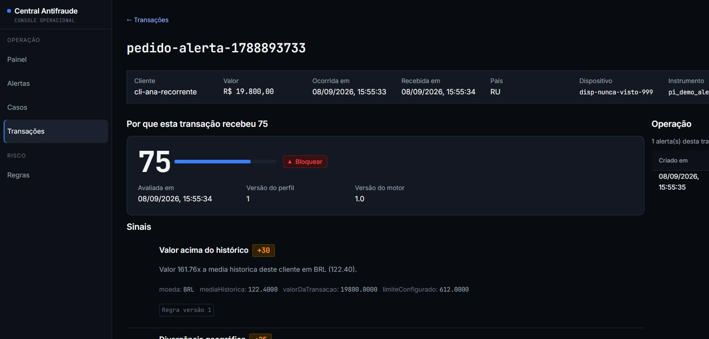
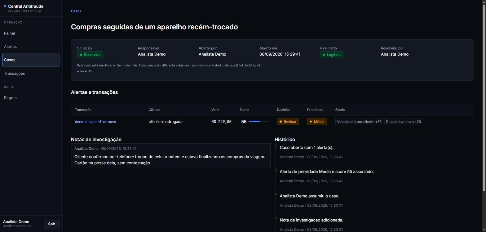

No ar · release v1.0.0
Central Antifraude
Sistemas distribuídos e decisão de risco
- Decisão
- Permitir · Revisar · Bloquear, com score determinístico e versionado
- Testes
- 1.211 · 546 unidade, 480 integração com PostgreSQL real, 134 frontend, 51 arquitetura
- Segurança
- Pentest gray-box em produção: 19 vetores, sem achado alto
- Infra
- Lambda (arm64) + SQS/DLQ + EventBridge · Neon · Vercel · custo esperado US$ 0,00
Visão geral
Plataforma B2B para avaliação de risco, monitoramento e investigação de transações suspeitas em pagamentos digitais. Recebe transações de sistemas externos autenticados por credencial própria, avalia o risco de forma determinística e explicável e devolve Permitir, Revisar ou Bloquear com os sinais que justificam a decisão.
A plataforma não processa dinheiro: recomenda uma ação e dá ao analista as ferramentas para investigar o que ficou em dúvida, com fila de alertas, casos com timeline, regras versionadas e backtest antes de publicar. O efeito assíncrono sai por Outbox, fila e Inbox, com efeito único mesmo com entrega repetida.
Arquitetura
API .NET 10 em AWS Lambda (Function URL) sobre PostgreSQL no Neon, com frontend na Vercel. O evento de cada avaliação sai por Outbox para uma fila SQS, e um Lambda consumidor aplica os efeitos. A infraestrutura é declarada em AWS SAM e os segredos ficam no SSM Parameter Store, nunca em variável de ambiente.
-
CentralAntifraude.DomainInvariantes e primitivos, com zero dependência. -
CentralAntifraude.ApplicationContratos e casos de uso. -
CentralAntifraude.InfrastructurePostgreSQL, EF Core e relógio. -
CentralAntifraude.ApiComposição HTTP com Minimal APIs. Testes de arquitetura seguram a direção das dependências. -
Lambda despachantePublica a Outbox na fila; é acionado logo após o commit e por uma varredura a cada 15 minutos (EventBridge Scheduler). -
Lambda consumidorLê da fila, aplica os efeitos com Inbox na mesma transação e confirma só depois do commit.
Caminho de uma transação
- O sistema externo envia a tentativa de pagamento com API key própria e chave de idempotência.
- Numa única transação serializável, a API grava a tentativa, avalia as quatro regras versionadas e grava a avaliação e um evento na Outbox. Conflito refaz a operação inteira; estourado o orçamento de retentativas, responde 503 com
Retry-After. - A resposta traz Permitir, Revisar ou Bloquear com score e sinais. Repetir a requisição devolve a avaliação original, sem recalcular.
- O despachante publica a Outbox no SQS. A garantia é a tabela; a invocação imediata só reduz a latência.
- O consumidor aplica os efeitos (contador diário e alerta) e confirma a mensagem só depois do commit. Falhas repetidas vão para a DLQ após 5 tentativas.
- O analista abre um caso a partir do alerta, investiga e conclui. A conclusão humana não reescreve a decisão do motor: um Revisar concluído como Legítima é um falso positivo, não um defeito.
Capturas de tela


Pontos fortes
- Score explicável e versionado: quatro regras tipadas; cada decisão guarda a versão do perfil e das regras acionadas, e o banco recusa apagar o que a sustenta.
- Idempotência sob concorrência: seis requisições simultâneas do mesmo cliente exigem contagens 1 a 6, sem repetir nem pular; repetir a chamada devolve a avaliação original.
- Outbox, SQS e Inbox: efeito único mesmo com entrega repetida, processo caindo no meio ou vários despachantes ao mesmo tempo.
- Serverless na AWS: Lambda .NET 10 (arm64), SQS com DLQ, EventBridge Scheduler e segredos no SSM Parameter Store, sem recurso de custo fixo.
- Investigação auditável: casos com timeline somente-inserção e concorrência otimista; duas resoluções simultâneas produzem exatamente um 200 e um 409.
- Backtest antes de publicar: reaplica a regra candidata sobre o histórico, no mesmo motor da avaliação real, sem tocar em produção.
- Segurança: API key própria para integrações, refresh token rotativo, proteção CSRF e rate limit, validados em pentest contra a produção.
Limites e decisões conscientes
O que este projeto não faz, e por quê. Descrever isso com precisão vale mais do que exagerar o escopo.
- Não processa dinheiro nem guarda PAN, CVV ou credencial financeira: só referências tokenizadas fornecidas por um sistema externo.
- Pesos e limiares das regras são configuração de demonstração. As práticas têm fonte (U.S. Payments Forum, ADR 0008); os números não são padrão de mercado.
- IA não participa do score, dos sinais nem das explicações: tudo é código determinístico.
- Não é banco, gateway, adquirente nem solução certificada de compliance.
- A infraestrutura suspende quando ociosa (é o que sustenta o custo zero): a primeira visita depois de um tempo parado leva cerca de 4 s.